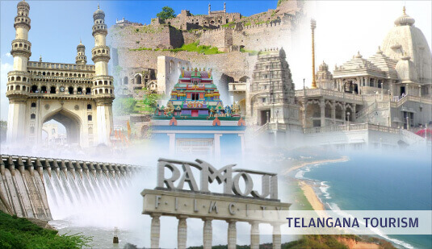

-
The Telangana State Tourism Development Corporation is a state government agency which promotes tourism in Telangana,
a state in the Southern region of India.The retired Director General of Police Pervaram Ramulu is the appointed
First chairman of Telangana State Tourism. Tourist attractions in Telangana include historical places, monuments,
forts, water falls, forests and temples.
Hyderabad, the state capital, placed 2nd in Traveler Magazine's best places to see in the world in 2015.
